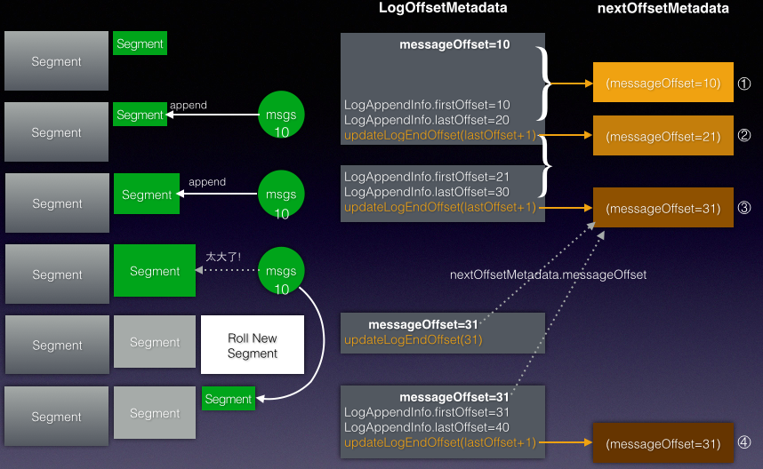

LogAppend
KafkaApis
上篇 KafkaRequestHandler 会将 Request请求转发给 KafkaApis处理:根据不同的请求类型调用不同的方法进行处理.
class KafkaApis(val requestChannel: RequestChannel, val replicaManager: ReplicaManager, val coordinator: GroupCoordinator,
val controller: KafkaController, val zkUtils: ZkUtils, val brokerId: Int, val config: KafkaConfig, val metadataCache: MetadataCache, val metrics: Metrics, val authorizer: Option[Authorizer]) {
// Top-level method that handles all requests and multiplexes to the right api
def handle(request: RequestChannel.Request) {
try{
ApiKeys.forId(request.requestId) match {
case ApiKeys.PRODUCE => handleProducerRequest(request)
case ApiKeys.FETCH => handleFetchRequest(request)
//....
}
} catch {
case e: Throwable =>
if ( request.requestObj == null) {
val response = request.body.getErrorResponse(request.header.apiVersion, e)
val respHeader = new ResponseHeader(request.header.correlationId)
// If request doesn't have a default error response, we just close the connection. For example, when produce request has acks set to 0 */
if (response == null) requestChannel.closeConnection(request.processor, request)
else requestChannel.sendResponse(new Response(request, new ResponseSend(request.connectionId, respHeader, response)))
}
}
}
}
SocketChannel的RequestChannel用于KafkaApis,因为响应和请求都需要放到RequestChannel的队列中被处理. 比如在handle出现异常时,会将Response加入到requestChannel的请求队列中(closeConnection也是一种Resp).
handleProducerRequest
有两个Callback函数定义,但是真正调用是通过①replicaManager.appendMessages触发的: ②sendResponseCallback->③produceResponseCallback->④ProducerResponse->⑤requestChannel.sendResponse 真正的发送ProducerResponse是在 produceResponseCallback中:如果不需要ack,则这一整条链路都不会调用. sendResponseCallback的参数 responseStatus是响应状态,所以①中要确保会生成它,然后使用回调的函数调用.
def handleProducerRequest(request: RequestChannel.Request) {
val produceRequest = request.requestObj.asInstanceOf[ProducerRequest]
val numBytesAppended = produceRequest.sizeInBytes
//partition是对Map分成两组:有授权的(true)和没有授权的(false).返回值类型是Map(TopicAndPartition->MessageSet),因为是根据data进行分区的
val (authorizedRequestInfo, unauthorizedRequestInfo) = produceRequest.data.partition {
//data是TopicAndPartition->MessageSet, 在判断是否授权时不需要MessageSet
case (topicAndPartition, _) => authorize(request.session, Write, new Resource(Topic, topicAndPartition.topic))
}
// *************************************************************************
// ② the callback for sending a produce response 发送Producer的Response的回调函数
def sendResponseCallback(responseStatus: Map[TopicAndPartition, ProducerResponseStatus]) {
// ③ 生成Response的Callback, 即将Response放入RequestChannel的responseQueue中
def produceResponseCallback(delayTimeMs: Int) {
if (produceRequest.requiredAcks == 0) {
if (errorInResponse) {
requestChannel.closeConnection(request.processor, request)
} else {
requestChannel.noOperation(request.processor, request)
}
} else {
// ④ Producer请求需要等待ack(1,-1), 创建ProducerResponse, 其中mergedResponseStatus来自于responseStatus
val response = ProducerResponse(produceRequest.correlationId, mergedResponseStatus, produceRequest.versionId, delayTimeMs)
// ⑤ 将响应信息推入到请求通道中, 最后会发送给Producer客户端
requestChannel.sendResponse(new RequestChannel.Response(request, new RequestOrResponseSend(request.connectionId, response)))
}
}
// ③ quotaManagers会调用produceResponseCallback, 它本身做了一些quota限额的工作
quotaManagers(ApiKeys.PRODUCE.id).recordAndMaybeThrottle(produceRequest.clientId, numBytesAppended, produceResponseCallback)
}
// *************************************************************************
// ① 将回调函数传给replicaManager.appendMessages方法, 所以回调函数真正的调用是在这里的
if (authorizedRequestInfo.isEmpty) sendResponseCallback(Map.empty) //authorizedRequestInfo是个Map,为空的话,说明没有消息,就不需要append
else { // call the replica manager to append messages to the replicas
replicaManager.appendMessages(produceRequest.ackTimeoutMs.toLong, produceRequest.requiredAcks, internalTopicsAllowed, authorizedRequestInfo, sendResponseCallback)
produceRequest.emptyData()
}
}
handleProducerRequest处理 Producer的请求: 将Request请求转换为 ProducerRequest. ProducerRequest含有生产者的 Partition->消息集:authorizedRequestInfo,会被写入到日志中. Producer端的 request.required.acks配置项,用来控制什么时候返回响应给客户端:
| acks | what happen |
|---|---|
| 0 | The producer never waits for an ack 生产者不会等待一个ack,收到消息后直接返回给客户端 |
| 1 | The producer gets an ack after the leader replica has received the data 当写Leader成功后就返回,其他的replica都是通过fetcher去同步的,所以kafka是异步写 |
| -1 | The producer gets an ack after all ISRs receive the data 要等待所有的replicas都成功后才能返回. |
responseCallback
responseCallback作为参数传入 appendMessages方法中,是因为首先要把生产者的消息写到本地日志后,才能判断是否要发送响应给客户端. 接着还有一种情况是延迟的操作,则回调函数的调用又会被拖后到DelayedOperation.onComplete时. 由于responseCallback回到函数需要一个表示响应状态的参数,因此这里要负责生成responseStatus.
def appendMessages(timeout: Long, requiredAcks: Short, internalTopicsAllowed: Boolean, messagesPerPartition: Map[TopicAndPartition, MessageSet],
responseCallback: Map[TopicAndPartition, ProducerResponseStatus] => Unit) {
if (isValidRequiredAcks(requiredAcks)) {
// 首先追加到本地日志中... appendToLocalLog, 然后判断是否要立即返回响应给客户端. 对于acks=-1, 需要延迟.
if (delayedRequestRequired(requiredAcks, messagesPerPartition, localProduceResults)) {
// 创建延迟的DelayedProduce, 在完成后, 调用onComplete, 也会触发responseCallback的回调
} else {
// we can respond immediately 对于acks=0,1的情况, 现在可以返回响应给客户端了
val produceResponseStatus = produceStatus.mapValues(status => status.responseStatus)
responseCallback(produceResponseStatus)
}
}
}
ReplicaManager.appendMessages
- 将消息追加到Partition的 leader replicas, 并且等待它们复制到其他副本上.
- 回调函数只有在超时或者需要acks时才会被调用
由于Producer客户端在发送 ClientRequest的时候已经根据 Partition找到了所属的 Leader, 所以ClientRequest一定是发送给 Leader节点的 SocketServer的(也是KafkaServer节点), 所以接收ProducerRequest一定是消息的 Partition对应的 Leader节点,可以放心地往本地写数据.
def appendMessages(timeout: Long, requiredAcks: Short, internalTopicsAllowed: Boolean, messagesPerPartition: Map[TopicAndPartition, MessageSet], responseCallback: Map[TopicAndPartition, ProducerResponseStatus] => Unit) {
if (isValidRequiredAcks(requiredAcks)) {
// 添加到本地日志(为什么是本地? 本地指的是KafkaServer节点, 同时也是TopicAndPartition的 Leader节点)
val localProduceResults = appendToLocalLog(internalTopicsAllowed, messagesPerPartition, requiredAcks)
// 下面是response的一些处理, 数据在appendToLocalLog方法中已经被成功地写入到 Leader节点了...
}
}
messagesPerPartition因为是 TopicAndPartition到消息集的映射, topic用于验证是否能够允许写. Partition是消息最终存储的所在文件夹,调用partition.appendMessagesToLeader(messages), 表示将消息messages追加到指定的这个 partition(而这个Partition一定是 Leader replicas).
private def appendToLocalLog(internalTopicsAllowed: Boolean, messagesPerPartition: Map[TopicAndPartition, MessageSet],
requiredAcks: Short): Map[TopicAndPartition, LogAppendResult] = {
messagesPerPartition.map { case (topicAndPartition, messages) =>
// reject appending to internal topics if it is not allowed.
if (!Topic.InternalTopics.contains(topicAndPartition.topic) || internalTopicsAllowed) {
val partitionOpt = getPartition(topicAndPartition.topic, topicAndPartition.partition)
val info = partitionOpt match {
case Some(partition) => partition.appendMessagesToLeader(messages.asInstanceOf[ByteBufferMessageSet], requiredAcks)
}
(topicAndPartition, LogAppendResult(info))
}
}
}
topicAndPartition的源头是由 Producer客户端构造的,服务端需要根据topic和 partitionId构造出属于自己的 Partition用于写日志
Partition是怎么来的:getOrCreatePartition的调用链=becomeLeaderOrFollower<-KafkaApis.handleLeaderAndIsrRequest
private val allPartitions = new Pool[(String, Int), Partition]
def getOrCreatePartition(topic: String, partitionId: Int): Partition = {
var partition = allPartitions.get((topic, partitionId))
if (partition == null) {
allPartitions.putIfNotExists((topic, partitionId), new Partition(topic, partitionId, time, this))
partition = allPartitions.get((topic, partitionId))
}
partition
}
def getPartition(topic: String, partitionId: Int): Option[Partition] = {
val partition = allPartitions.get((topic, partitionId))
if (partition == null) None
else Some(partition)
}
Partition.appendMessagesToLeader
消息写到Partition的 Leader replica,在确定 Partition的 Replica后,往Replication的 Log实例追加数据. 调用链从ReplicationManager -> Partition -> Replica -> Log, 消息messages最终写到日志文件中.
def appendMessagesToLeader(messages: ByteBufferMessageSet, requiredAcks: Int = 0) = {
val (info, leaderHWIncremented) = inReadLock(leaderIsrUpdateLock) {
val leaderReplicaOpt = leaderReplicaIfLocal()
leaderReplicaOpt match {
case Some(leaderReplica) =>
val log = leaderReplica.log.get
val minIsr = log.config.minInSyncReplicas
val inSyncSize = inSyncReplicas.size
// Avoid writing to leader if there are not enough insync replicas to make it safe
if (inSyncSize < minIsr && requiredAcks == -1) throw new NotEnoughReplicasException("Number of insync replicas below required minimum")
val info = log.append(messages, assignOffsets = true)
replicaManager.tryCompleteDelayedFetch(new TopicPartitionOperationKey(this.topic, this.partitionId))
(info, maybeIncrementLeaderHW(leaderReplica))
}
}
if (leaderHWIncremented) tryCompleteDelayedRequests() // some delayed operations may be unblocked after HW changed
info
}
leaderReplicaIfLocal
判断leaderReplica是否是本地的, 是比较leaderReplicaIdOpt(这个变量是volatile)和localBrokerId是否相同. localBrokerId在 Kafka节点启动时就是确定的,即同一个KafkaServer节点的所有 Partition的 BrokerId都是相等的. 而leaderReplicaIdOpt会在 makeLeader和 makeFollower中被修改(也都被becomeLeaderOrFollower调用)
assignedReplicaMap是一个 Map:.因为一个Partition的 Replication有 Leader和 Follower. 它们都是分布在不同的Broker节点上.所以Partition持有所有这些 Replication,就可以知道Replication的分布情况.
class Partition(val topic: String, val partitionId: Int, time: Time, replicaManager: ReplicaManager) {
private val localBrokerId = replicaManager.config.brokerId //KafkaServer当前节点的BrokerId
@volatile var leaderReplicaIdOpt: Option[Int] = None
private val assignedReplicaMap = new Pool[Int, Replica]
def leaderReplicaIfLocal(): Option[Replica] = {
leaderReplicaIdOpt match {
case Some(leaderReplicaId) => if (leaderReplicaId == localBrokerId) getReplica(localBrokerId) else None
case None => None
}
}
def getReplica(replicaId: Int = localBrokerId): Option[Replica] = {
val replica = assignedReplicaMap.get(replicaId)
if (replica == null) None
else Some(replica)
}
}
问题: 具体Replica是如何被创建出来的, 以及local和remote的含义分别是什么? 会在下一篇介绍.
Log.append
将消息转换为LogAppendInfo,并交给Log中最新的 Segment处理,因为一个Partition的 Log分成多个 Segment. 追加消息只到最新的Segment中,旧的Segment一旦关闭后,就不能再添加数据.所以必要的话会创建新的Segment.
- ① LogOffsetMetadata(Log的 Offset元数据)的当前值作为本次LogAppendInfo的 firstOffset
- ② 给MessageSet分配 Offset: 每条消息的offset都是单调递增的
- ③ LogAppendInfo的 lastOffset是这一批消息的最后一条消息的 offset
- ④ 添加消息到当前或者新创建的Segment
- ⑤ 更新Log End Offset为当前最后一条消息的 offset的下一条
@volatile var nextOffsetMetadata = new LogOffsetMetadata(activeSegment.nextOffset(), activeSegment.baseOffset, activeSegment.size.toInt)
def append(messages: ByteBufferMessageSet, assignOffsets: Boolean = true): LogAppendInfo = {
val appendInfo = analyzeAndValidateMessageSet(messages)
// trim any invalid bytes or partial messages before appending it to the on-disk log
var validMessages = trimInvalidBytes(messages, appendInfo)
// they are valid, insert them in the log
lock synchronized {
appendInfo.firstOffset = nextOffsetMetadata.messageOffset // ① 第一条消息的offset
if(assignOffsets) { // ② assign offsets to the message set 每条消息的offset都是递增的
val offset = new AtomicLong(nextOffsetMetadata.messageOffset)
validMessages = validMessages.validateMessagesAndAssignOffsets(offset, appendInfo.sourceCodec, appendInfo.targetCodec, config.compact)
appendInfo.lastOffset = offset.get - 1 // ③ 最后一条消息的offset
}
val segment = maybeRoll(validMessages.sizeInBytes) // maybe roll the log if this segment is full
segment.append(appendInfo.firstOffset, validMessages) // ④ now append to the log
updateLogEndOffset(appendInfo.lastOffset + 1) // ⑤ increment the log end offset
if(unflushedMessages >= config.flushInterval) flush() // 刷新
appendInfo
}
}
// 直接修改nextOffsetMetadata实例, 获取messageOffset时比读取文件要快
private def updateLogEndOffset(messageOffset: Long) {
nextOffsetMetadata = new LogOffsetMetadata(messageOffset, activeSegment.baseOffset, activeSegment.size.toInt)
}
追加一批消息,开始时从LogOffsetMetadata获取最新的 messageoffset, 最后更新LogOffsetMetadata的 messageOffset为最后一条消息的 offset+1, 这样下一次从LogOffsetMetadata获取的 messageOffset是紧接着上一次的 offset之后.
MessageSet
MessageSet: A set of messages with offsets. The format of each message is as follows:
- 8 byte message offset number
- 4 byte size containing an integer N
- N byte message
Message: The format of an N byte message is the following:
- 4 byte CRC32 of the message
- 1 byte "magic" identifier to allow format changes, value is 0 currently
- 1 byte "attributes" identifier(compression enabled, type of codec used)
- 4 byte key length, containing length K
- K byte key
- 4 byte payload length, containing length V
- V byte payload
ByteBufferMessageSet的 shallowIterator返回 MessageAndOffset迭代器,验证集合中的每条消息是否合法.
def shallowIterator: Iterator[MessageAndOffset] = internalIterator(true)
private def internalIterator(isShallow: Boolean = false): Iterator[MessageAndOffset] = {
new IteratorTemplate[MessageAndOffset] {
var topIter = buffer.slice() // buffer是MessageSetByteBuffer
def makeNextOuter: MessageAndOffset = {
if (topIter.remaining < 12) return allDone() // if there isn't at least an offset and size, we are done. 至少要有8+4=12bytes
val offset = topIter.getLong() // 读取8bytes(Long类型)的offset的值
val size = topIter.getInt() // 读取4bytes(Int类型)的size的值, 这个值是Message的字节大小
if(size < Message.MinHeaderSize) throw new InvalidMessageException() // Message的Header部分(除了Key,Value的内容). 即size必须>=HeaderSize
if(topIter.remaining < size) return allDone() // we have an incomplete message
val message = topIter.slice() // read the current message and check correctness
message.limit(size) // size表示消息的大小(N)
topIter.position(topIter.position + size) // 通过上面的slice,已经定位到这条消息的头部,再加上size, 定位到的是下一条消息的位置
val newMessage = new Message(message) // 已经得到了Message的完整内容了(ByteBuffer)
new MessageAndOffset(newMessage, offset) // Message和offset组合成MessageAndOffset
}
override def makeNext(): MessageAndOffset = makeNextOuter
}
}
analyzeAndValidateMessageSet
除了检查每条消息是否和CRC匹配,消息的大小是否有效,还返回了如下信息:
- First offset in the message set 消息集中第一个offset
- Last offset in the message set 消息集中最后一个offset
- Number of messages 消息数量
- Number of valid bytes 有效字节数
- Whether the offsets are monotonically increasing 偏移量是否单调递增
private def analyzeAndValidateMessageSet(messages: ByteBufferMessageSet): LogAppendInfo = {
var shallowMessageCount = 0 // 消息数量
var validBytesCount = 0 // 有效字节数
var firstOffset, lastOffset = -1L // 第一条消息和最后一条(在循环时表示上一条消息的offset)消息的offset
var monotonic = true // 是否单调变化(单调递增)
for(messageAndOffset <- messages.shallowIterator) {
if(firstOffset < 0) firstOffset = messageAndOffset.offset // update the first offset if on the first message
if(lastOffset >= messageAndOffset.offset) monotonic = false // check that offsets are monotonically increasing
lastOffset = messageAndOffset.offset // update the last offset seen
val m = messageAndOffset.message
val messageSize = MessageSet.entrySize(m) // Check if the message sizes are valid.
m.ensureValid() // check the validity of the message by checking CRC
shallowMessageCount += 1
validBytesCount += messageSize
}
LogAppendInfo(firstOffset, lastOffset, sourceCodec, targetCodec, shallowMessageCount, validBytesCount, monotonic)
}
因为MessageSet包含多条 Message.firstoOffset<0只会在第一条消息时执行,firstOffset=第一条消息的offset. lastOffset在遍历每条消息时,都更改为当前消息的offset. 初始时为-1,不执行if, 并赋值为第一条消息的offset, 第二条消息时,lastOffset是第一条消息的 offset,messageAndOffset现在是第二条消息,如果是单调递增的offset, 越往后消息的offset都比前一条 offset要高,则if语句同样都不会执行.直到最后一条消息的offset设置为 lastOffset.
validateMessagesAndAssignOffsets
LogAppendInfo的 firstOffset虽然上面已经计算出来了,但是真正是由LogOffsetMetadata.messageOffset确定的 lastOffset也要根据初始化值重新计算:offsetCounter在循环每条消息时不断递增1,代表的是下一条消息的offset.
private[kafka] def validateMessagesAndAssignOffsets(offsetCounter: AtomicLong, sourceCodec: CompressionCodec, targetCodec: CompressionCodec, compactedTopic: Boolean = false): ByteBufferMessageSet = {
if(sourceCodec == NoCompressionCodec && targetCodec == NoCompressionCodec) {
var messagePosition = 0
buffer.mark() // 先标记
while(messagePosition < sizeInBytes - MessageSet.LogOverhead) {
buffer.position(messagePosition) // 定位到MessageSet中代表每条消息的开头位置,从0开始
buffer.putLong(offsetCounter.getAndIncrement()) // offsetCounter是每条消息都增加1(8bytes), 现在指针到了size的开头
val messageSize = buffer.getInt() // offset后面跟的是消息的大小size(4bytes), 读取出值=是消息的字节数
val positionAfterKeySize = buffer.position + Message.KeySizeOffset + Message.KeySizeLength // pos是Message消息的位置,就size的末尾
if (compactedTopic && positionAfterKeySize < sizeInBytes) {
buffer.position(buffer.position() + Message.KeySizeOffset)// 放到Message消息的Key-Length的开头
val keySize = buffer.getInt() // 读取4bytes,即key-length的内容
}
messagePosition += MessageSet.LogOverhead + messageSize // 更新messagePosition为下一条消息做准备(8+消息大小表示MessageSet中一条完整的消息)
}
buffer.reset() // 重置的时候, 回到最开始标记的地方
this
}
}
在遍历完MessageSet后,offset的值是初始值+所有消息数量, 最后更新下LogAppendInfo的 lastOffset.
appendInfo.firstOffset = nextOffsetMetadata.messageOffset
if(assignOffsets) { // assign offsets to the message set
val offset = new AtomicLong(nextOffsetMetadata.messageOffset)
validMessages = validMessages.validateMessagesAndAssignOffsets(offset, appendInfo.sourceCodec, appendInfo.targetCodec, config.compact)
appendInfo.lastOffset = offset.get - 1
}
为什么在最后要减去1: 因为每条消息的offsetCounter在获取后就递增1,所以它表示的是下一条消息的offset. 假设初始值nextOffsetMetadata的offset=10,第一条消息的offset=10,递增1;第二条消息的offset=11,递增1. 假设有5条消息,最后的offset返回值=15,而实际上最有一条消息的offset=lastOffset应该是15-1=14
|message1|message2|message3|message4|message5
offset 10 11 12 13 14 <- lastOffset
increment 11 12 13 14 15 <- offsetCounter
LogSegment Roll
发生Roll是有一定时机的:
- 当前Segment+本次需要追加的消息大小超过Segment的阈值
- 索引满了(Segment是由 log和 index组成, 不仅log满了要 Roll, index满了也要 Roll)
- 离上次创建Segment的时间到达一定需要滚动的时间
private val segments: ConcurrentNavigableMap[java.lang.Long, LogSegment] = new ConcurrentSkipListMap[java.lang.Long, LogSegment]
loadSegments() // 加载Segments,会填充到segments链式Map中(因为Map是无序的,而Segment是有序的,所以要使用List)
def activeSegment = segments.lastEntry.getValue // The active segment that is currently taking appends 最后一个Segment是当前活动的
def logEndOffset: Long = nextOffsetMetadata.messageOffset // The offset of the next message that will be appended to the log 添加到日志中下一条消息的offset
private def maybeRoll(messagesSize: Int): LogSegment = {
val segment = activeSegment // segments中最后一个Segment, 总是以最后一个Segment看是否到达Roll条件
if (segment.size > config.segmentSize - messagesSize || segment.index.isFull || segment.size > 0 && time.milliseconds - segment.created > config.segmentMs - segment.rollJitterMs) {
roll() // 创建新的Segment, 此时如果调用activeSegment(这是一个方法哦), 得到的就是这个新创建的Segment
} else segment // 使用当前的Segment,不需要创建新的Segment
}
当需要(滚动地)创建一个新的Segment,以当前的logEndOffset为起点,作为新Segment的 segmentBaseOffset.
def roll(): LogSegment = {
lock synchronized {
val newOffset = logEndOffset // 最新的offset
val logFile = logFilename(dir, newOffset) // Segment包括了 log数据文件和 index索引文件
val indexFile = indexFilename(dir, newOffset) // Segment的 baseOffset会作为这个 Segment的 log文件和 index文件的文件名称
segments.lastEntry() match {
case null => // 新创建的Segment
case entry => {
entry.getValue.index.trimToValidSize() // 对index和 log都 trim截断
entry.getValue.log.trim()
}
}
val segment = new LogSegment(dir, startOffset = newOffset, ...)
val prev = addSegment(segment) // 将新创建的Segment添加到 segments Map中
// We need to update the segment base offset and append position data of the metadata when log rolls. The next offset should not change.
updateLogEndOffset(nextOffsetMetadata.messageOffset)
// schedule an asynchronous flush of the old segment
scheduler.schedule("flush-log", () => flush(newOffset), delay = 0L)
segment
}
}
// Add the given segment to the segments in this log. If this segment replaces an existing segment, delete it.
// segments的 Key是每个 Segment的 baseOffset, 所以一个Partition中所有 Segment的 baseOffset都是不同的,代表了它的第一条消息在Partition中的绝对 offset
def addSegment(segment: LogSegment) = this.segments.put(segment.baseOffset, segment)
每个Segment由 log和 index组成,log是 FileMessageSet,含有真正的消息.index是 OffsetIndex:逻辑的offset到物理文件位置的索引. Segment间有这样的关系:之前任何的segment的 offset < 每个Segment的 baseOffset <= 当前Segment任何消息最小的 offset.
- 当前Segment的第一条消息的 offset会作为这个 Segment中所有消息的 segmentBaseOffset
- 所以右边的式子成立,最小的offset=segmentBaseOffset, 后面消息的offset一定大于这个值
- 每个Segment都是按照时间顺序创建的,后面的Segment的最小的 baseOffset一定大于前面的 Segment的最大的 offset
class LogSegment(val log: FileMessageSet, val index: OffsetIndex,
val baseOffset: Long, val indexIntervalBytes: Int, val rollJitterMs: Long, time: Time){
def this(dir: File, startOffset: Long, indexIntervalBytes: Int, maxIndexSize: Int, rollJitterMs: Long, time: Time, fileAlreadyExists: Boolean = false, initFileSize: Int = 0, preallocate: Boolean = false) =
this(new FileMessageSet(file = Log.logFilename(dir, startOffset), fileAlreadyExists = fileAlreadyExists, initFileSize = initFileSize, preallocate = preallocate),
new OffsetIndex(file = Log.indexFilename(dir, startOffset), baseOffset = startOffset, maxIndexSize = maxIndexSize),
startOffset, indexIntervalBytes, rollJitterMs, time)
}
updateLogEndOffset
有两个地方调用了updateLogEndOffset, 第一次就是上面在addSegment之后(貌似取值后又设置进去,没啥变化), 第二次是在往Segment添加消息之后(更新为LogAppendInfo.lastOffset+1,即最后一条消息的offset的下一个)
实际上在addSegment之后,activeSegment会变成新创建的那个Segment.虽然messageOffset没有变化,但是后面两个都变了.
private def updateLogEndOffset(messageOffset: Long) {
nextOffsetMetadata = new LogOffsetMetadata(messageOffset, activeSegment.baseOffset, activeSegment.size.toInt)
}
也就是说追加到roll segment,发生了两次updateLogEndOffset,而如果是已有的Segment,则只有一次update操作. 每次update操作都是新创建一个 LogOffsetMetadata对象,nextOffsetMetadata是一个 var变量,表示下一个offset的元数据.
虽然LogOffsetMetadata创建的时机不是很稳定的, 但是它的作用域仍然是整个Partition范围的. 因为它的messageOffset要不断地更新:即使没有创建Segment,在每次追加数据到已有Segment后都要 执行updateLogEndOffset(appendInfo.lastOffset + 1), 将messages最后一条消息的下一个作为其 messageOffset,正如变量名nextOffsetMetadata,表示的是下一个offset:nextOffset的元数据信息
注意:在同一批messages中,并不需要每条消息都要更新LogEndOffset,只有不同批次的messages才需要更新.

LogOffsetMetadata
- [1] the message offset 消息的偏移量,可以认为是绝对偏移量,即同一个Partition的所有Segment的绝对偏移位置
- [2] the base message offset of the located segment 当前Segment的base offset.可以认为是相对偏移量
- [3] the physical position on the located segment 在Segment中的物理位置,用于读取消息的具体内容
case class LogOffsetMetadata(messageOffset: Long, segmentBaseOffset: Long = LogOffsetMetadata.UnknownSegBaseOffset, relativePositionInSegment: Int = LogOffsetMetadata.UnknownFilePosition) {
// check if this offset is already on an older segment compared with the given offset
def offsetOnOlderSegment(that: LogOffsetMetadata): Boolean = this.segmentBaseOffset < that.segmentBaseOffset
// check if this offset is on the same segment with the given offset
def offsetOnSameSegment(that: LogOffsetMetadata): Boolean = this.segmentBaseOffset == that.segmentBaseOffset
// check if this offset is before the given offset
def precedes(that: LogOffsetMetadata): Boolean = this.messageOffset < that.messageOffset
// compute the number of messages between this offset to the given offset
def offsetDiff(that: LogOffsetMetadata): Long = this.messageOffset - that.messageOffset
// compute the number of bytes between this offset to the given offset if they are on the same segment and this offset precedes the given offset
def positionDiff(that: LogOffsetMetadata): Int = this.relativePositionInSegment - that.relativePositionInSegment
}
因为baseOffset是第一条消息的 offset,所以同一个Segment的所有消息的 baseOffset都是一样的.
- messageOffset: 针对Partition全局的绝对偏移量
- segmentBaseOffset: 每个Segment的第一条消息在 Partition的 messageOffset
- relativePositionInSegment: 只有在同一个Segment中,两个offset相减,表示两个offset之间的字节数
原先以为在同一个Segment中每条消息的 segmentBaseOffset表示这条消息对于最开始消息的相对偏移量,其实是错的.
实际上每条消息的offset都是单调递增1的(连续的).而relativePositionInSegment是不连续的(因为每条消息的长度不同)
LogSegment append
messages追加到 Segment的起始位置是: segment.append(appendInfo.firstOffset, validMessages) 写入数据到log文件的同时,还要间隔indexIntervalBytes大小写入一条索引条目(并不是每条消息都写入一个索引)
//Append the given messages starting with the given offset. Add an entry to the index if needed.
def append(offset: Long, messages: ByteBufferMessageSet) {
if (messages.sizeInBytes > 0) {
if(bytesSinceLastIndexEntry > indexIntervalBytes) {
index.append(offset, log.sizeInBytes()) // append an entry to the index (if needed)
this.bytesSinceLastIndexEntry = 0 // 成功写一次索引后,重置为0
}
log.append(messages) // append the messages
this.bytesSinceLastIndexEntry += messages.sizeInBytes // 统计值增加,用于判断是否需要写索引
}
}
FileMessageSet
创建LogSegment时,知道segmentBaseOffset,得到log和 index的文件名,创建log文件,获取文件的FileChannel.
def append(messages: ByteBufferMessageSet) {
val written = messages.writeTo(channel, 0, messages.sizeInBytes)
_size.getAndAdd(written)
}
def sizeInBytes(): Int = _size.get()
ByteBufferMessageSet提供了写数据的方法,writeTo提供的offset,size是为了让channel从指定的offset开始写,
一共写入size大小(不是MessageSet中的offset和size概念!). 而这里需要把全部数据都写入channel中.
class ByteBufferMessageSet(val buffer: ByteBuffer) extends MessageSet {
// Ignore offset and size from input. We just want to write the whole buffer to the channel.
def writeTo(channel: GatheringByteChannel, offset: Long, size: Int): Int = {
buffer.mark()
var written = 0
while(written < sizeInBytes) written += channel.write(buffer)
buffer.reset()
written
}
}
FileMessageSet的构造函数有 start和 end,提供这两个参数可以返回消息文件的子集/切片. searchFor给定目标 offset和起始位置,返回>=目标offset最近的那个的文件位置. 它的作用是给定一个offset,要拉取这个offset之后的消息(这部分消息就是一个子集).
要确保startingPosition位于消息的边界,不过一般startPos=0,而不是文件随便某个位置.
def searchFor(targetOffset: Long, startingPosition: Int): OffsetPosition = {
var position = startingPosition
val buffer = ByteBuffer.allocate(MessageSet.LogOverhead) // LogOverhead=8+4=12
val size = sizeInBytes() // 这是FileMessageSet的消息大小
while(position + MessageSet.LogOverhead < size) {
buffer.rewind() // 在循环的过程中, 由于读取buffer, 指针后移, 所以开始读取前,要位于buffer的头部
channel.read(buffer, position) // 要确保startPos位于消息的边界
buffer.rewind() // 从文件的postiion位置读取数据到buffer中, 读取后位于buffer的末尾, 调用rewind回到buffer的开始
val offset = buffer.getLong() // 这条消息的offset,8个字节
if(offset >= targetOffset) return OffsetPosition(offset, position) // Got You!
val messageSize = buffer.getInt() // size字段存储的是这条message的大小,它本身占用了4个字节
position += MessageSet.LogOverhead + messageSize // 在MessageSet中的一条完整的消息(offset,size,message)
}
null
}
OffsetPosition是这条消息的逻辑 log偏移量和在日志文件中的物理位置(即在文件中的位置) 因为MessageSet中每条消息的大小都存在 size中,所以不必真正读取这条消息就可以找到需要的offset.
OffsetIndex
OffsetIndex和 FileMessageSet都是在创建 LogSegment时同时创建. OffsetIndex还需要 baseOffset=segmentBaseOffset.
- 索引文件映射offset到文件的物理位置(类似上面的OffsetPosition),它不会对每条消息都索引,所以是稀疏的.
- 由于offset和 position的值不像消息内容变长, 所以每个索引条目都固定为8bytes.即offset和 position分别4byte
- MessageSet中是8byte的 offset,而索引中是4byte,所以索引中存储的 offset是减去segmentBaseOffset的值才放的下
- 由于是稀疏索引,所以可以把索引文件通过内存映射的方式将整个索引文件都放入内存中,可以加快offset的查询
- 因为offset是有序的,所以查询指定的offset时,使用二分查找就可以确定offset在哪个位置(当然也知道position了)
- 可能指定的offset在索引文件中(0,5,8)不存在,但是可以找到小于等于指定offset(6)的最大offset(5)
- 由于索引文件随着消息的追加而不断变化,打开索引文件:空的允许追加的可变索引或不可变的只读的索引文件
- 当索引文件发生roll时,索引文件都不会变化了(类似日志文件的滚动),这时可以把可变的索引文件转为不可变的索引文件
OffsetIndex中每个条目的物理格式是4字节的相对offset和4字节的文件位置(消息在log中的物理位置). 已经知道绝对offset和 position的对应关系的(OffsetPosition),绝对offset-baseOffst=相对offset
假设baseOffset=50, 消息1的offset=55(这是一个绝对offset,针对partition范围), 相对offset=55-50=5 消息2的offset=56,相对offset=56-50=6,即索引条目中的offset都是相对于segmentBaseOffset的差值. 这样只需要4个字节就可以放的下,而且每条消息的offset是单调递增的,以一个基线为准,存储的数据量就会少很多. 带来的额外工作是需要将相对offset转换为全局/绝对offset,因为外部给的offset一定是一个绝对 offset.
// Append an entry for the given offset/location pair to the index. This entry must have a larger offset than all subsequent entries.
def append(offset: Long, position: Int) {
inLock(lock) {
if (size.get == 0 || offset > lastOffset) {
this.mmap.putInt((offset - baseOffset).toInt) // 相对于segmentBaseOffset的偏移量
this.mmap.putInt(position) // offset对应的position
this.size.incrementAndGet()
this.lastOffset = offset
require(entries * 8 == mmap.position, entries + " entries but file position in index is " + mmap.position + ".")
}
}
}
二分查找,先将目标offset减去 baseOffset,因为索引存的都是相对offset.
// Find the slot in which the largest offset less than or equal to the given target offset is stored.
// -1 if the least entry in the index is larger than the target offset or the index is empty
private def indexSlotFor(idx: ByteBuffer, targetOffset: Long): Int = {
val relOffset = targetOffset - baseOffset // we only store the difference from the base offset so calculate that
if(entries == 0) return -1 // check if the index is empty
if(relativeOffset(idx, 0) > relOffset) return -1 // check if the target offset is smaller than the least offset
// binary search for the entry
var lo = 0
var hi = entries-1
while(lo < hi) {
val mid = ceil(hi/2.0 + lo/2.0).toInt
val found = relativeOffset(idx, mid)
if(found == relOffset) return mid
else if(found < relOffset) lo = mid
else hi = mid - 1
}
lo
}